Notice: This website and Runettic is based off of a fictional book series of the same name
This website is fan theory and speculation, not in accordance to the writing of the series. Anything and everything here is subject to change before the four book in the series releases.
What is Runettic?
Runettic is both the name of a book series, and the magic that various characters in the book use. Runettic is designed around both power and balance. The name comes from the words Rune, meaning a specific type of alphabet that symbolizes strengh, and the word Lattice, meaning both shapes and balance
How does Runettic work?
While not very well explained in the book, Runettic involves pulling power that can be used by the wielder. Power can come from three major sources, called Paths of power, which are Power from within (Pulling power from one's own body) Power from Beyond (Pulling power from outside one's body) and Remnant Power (Power from that which ones had power)
Once the Runettic user has access to power, it's up to them to use it. A Runettic user that is both healthy and draws power from within always has access to some power, and they can easily bolster their own strength, shoot various projectiles from their hands, or even increase their intelligence. But with drawing power, three has to be a balance, so increasing one's strength this way is bound to make them exaust faster, and even take away some of thier life.
Why Runes?
The main species, unnamed in the book, can't naturally hold or use any power, and can only wield it using runes, while is the remnant of an ancient civilization called the Huzari. Characters like Ember Lance uses runes on both their weapons and clothing, while Yeagin has them branded onto his body. It's the median between Runettic users and the raw power they harness
Why Lattice?
The Lattice symbolizes balance, and is the name of the diagram used to better explain the different Runettic paths. A Runettic power is show by the various cirlces. The Runettic Lattice heavily features interlocking triangles that show the relationships between the various Runettic powers, while the hexagon is supposed to represent the creature that weilds the powers. The placement of each Runettic Power is extremely important, and more information can be found in the Lattice section

